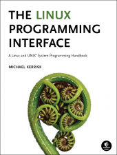

Overview
Question: What is a signal?Answer: Simply put, it's a way in which a process can be notified of an event. Usually, one process notifies (signals) another process, although a process can signal itself. We can say that one process sends a signal to another process or say that one process signals another process. They mean the same thing.
We've all seen these notifications before. In a desktop environment, if some event has occurred that the user should be aware of, a message may appear on the screen. Usually, this is in the lower right corner of the desktop. A notification may happen because a file has finished downloading, a user has appeared on Skype, or maybe a security update is available for installation.
There are many kinds of signals that can be sent to a process. If you've ever run a program from the command line, you may have used a signal to terminate it. Maybe you are writing a program and you accidentally cause an infinite loop. The way you terminate it is by pressing Ctrl-C. This key combination is actually sending a signal (SIGINT, meaning interrupt) to the runaway process. The default behavior when a process receives a SIGINT signal is to terminate.
To see a list of all signals, type kill -l at the command line. (That's a lowercase 'L')
For a more detailed list of signals and their meanings, look here. Here are some of the more common signals:1) SIGHUP 2) SIGINT 3) SIGQUIT 4) SIGILL 5) SIGTRAP 6) SIGABRT 7) SIGBUS 8) SIGFPE 9) SIGKILL 10) SIGUSR1 11) SIGSEGV 12) SIGUSR2 13) SIGPIPE 14) SIGALRM 15) SIGTERM 16) SIGSTKFLT 17) SIGCHLD 18) SIGCONT 19) SIGSTOP 20) SIGTSTP 21) SIGTTIN 22) SIGTTOU 23) SIGURG 24) SIGXCPU 25) SIGXFSZ 26) SIGVTALRM 27) SIGPROF 28) SIGWINCH 29) SIGIO 30) SIGPWR 31) SIGSYS 34) SIGRTMIN 35) SIGRTMIN+1 36) SIGRTMIN+2 37) SIGRTMIN+3 38) SIGRTMIN+4 39) SIGRTMIN+5 40) SIGRTMIN+6 41) SIGRTMIN+7 42) SIGRTMIN+8 43) SIGRTMIN+9 44) SIGRTMIN+10 45) SIGRTMIN+11 46) SIGRTMIN+12 47) SIGRTMIN+13 48) SIGRTMIN+14 49) SIGRTMIN+15 50) SIGRTMAX-14 51) SIGRTMAX-13 52) SIGRTMAX-12 53) SIGRTMAX-11 54) SIGRTMAX-10 55) SIGRTMAX-9 56) SIGRTMAX-8 57) SIGRTMAX-7 58) SIGRTMAX-6 59) SIGRTMAX-5 60) SIGRTMAX-4 61) SIGRTMAX-3 62) SIGRTMAX-2 63) SIGRTMAX-1 64) SIGRTMAX
There are values associated with the signal names, but they are implementation dependent, meaning each system may use different values. Because of this, you should always use the name of the signal, which is more portable.
Name Default behavior Meaning SIGINT Terminate Interrupt SIGTERM Terminate Terminate SIGKILL Terminate Kill SIGSTOP Stop Stop executing, if running SIGCONT Continue Continue executing, if stopped
Simple Example
For this first example, we'll write a program that runs in an infinite loop. We'll send a SIGINT signal to the process by pressing Ctrl-C in the terminal. By default, this signal will terminate the process. Next, we'll see how we can ignore that signal.The program: (infinte-loop.c)
int main(void)
{
while (1)
{
}
return 0;
}
and run it:gcc infinite-loop.c -o infinite-loop
Of course, nothing seems to be happening, but it is happily looping doing nothing. To terminate it, press Ctrl-C. The shell (in the terminal) sent a SIGINT to the process. You'll also see ^C printed in the terminal. You can also use the kill or killall program to send any signal to a process. (The name kill is really a misnomer from the olden-days, as the program doesn't necessarily kill any process. A better name would have been signal or send-signal, since that's really what it does.)./infinite-loop
To use these, while the process is running, open up another terminal (the current one is busy running the infinite loop) and type:
This will terminate the process. Actually, this will send a SIGINT to all processes named infinite-loop. So, be careful using this if you are trying to signal a process that has the same name as other processes. The kill command requires you to specify the process ID (PID), which is unique among all processes. So, for example, if our infinite-loop process has a PID of 12345, you would use kill like this:killall -SIGINT infinite-loop
kill -SIGINT 12345
Since the program does not contain any code to ignore or handle the signal, the process is terminated. This is the default behavior of the interrupt signal. In fact, most signals that are received by a process will terminate the process unless the process does something to prevent that.
OK, let's fix the program so that if we receive an interrupt signal (SIGINT), we can ignore it and continue looping. There are two steps that must be taken to handle the signal. The first thing to do is to register or install a signal handler. This is done with the signal function. Here's the prototype:
This says that signal is "a function that takes two parameters and returns a pointer to a function that takes an integer and returns a void pointer; the first parameter is an integer and the second is a pointer to a function and that function takes an integer and returns a void pointer". Duh. To make this easier to read and understand, a typedef helps:void (*signal(int signum, void (*func )(int)))(int);
This says that sighandler_t is "a pointer to a function that takes an integer and returns a void pointer". Then, signal is "a function that takes an integer and a sighandler_t and returns a sighandler_t". Fortunately, calling this function is much simpler than writing its prototype!typedef void (*sighandler_t)(int); sighandler_t signal(int signum, sighandler_t handler);
So, essentially what we are passing to the signal function is an integer that represents the signal that we wish to handle and a pointer to a function (callback) that will be called when the signal arrives. We typically call that function a signal handler.
Here's the modified code:
#include <signal.h> /* signal, signal defines */
#include <stdio.h> /* printf */
/* This function will be called when a SIGINT arrives */
void sighandler(int sig)
{
printf("I'm ignoring you!\n");
}
int main(void)
{
/* Install signal handler */
signal(SIGINT, sighandler);
while (1)
{
}
return 0;
}
If you use the killall program to send the same signal, you'll see this: (I ran it 3 times)^CI'm ignoring you! ^CI'm ignoring you! ^CI'm ignoring you!
It's the shell that puts the ^C characters on the screen.I'm ignoring you! I'm ignoring you! I'm ignoring you!
Nice! We've prevented our program from being terminated with Ctrl-C. BUT... it's still running! How do we stop it now?!?! In the terminal press Ctrl-\ (That's the control + backslash keys.) You'll see this:
Of course, just like with any system call, you want to check for any errors. This is the proper way to install the signal handler (check the return value):^\Quit
#include <signal.h> /* signal, signal defines */
#include <stdio.h> /* printf */
void sighandler(int sig)
{
printf("I'm ignoring you!\n");
}
int main(void)
{
/* Install signal handler */
if (signal(SIGINT, sighandler) == SIG_ERR)
{
printf("Error installing signal handler.\n");
return 1;
}
while (1)
{
}
return 0;
}
You'll also notice that the signal hander, sighandler, takes an integer (the signal number) as a parameter, yet it is ignored here. The reason the signal number is passed in is because we might want one function to handle more than one signal. You could write one function per signal that you wish to handle, but if the logic is similar or very simple, one function might be fine.
This example handles both SIGINT and SIGQUIT
#include <signal.h> /* signal, signal defines */
#include <stdio.h> /* printf */
void sighandler(int sig)
{
if (sig == SIGINT)
printf("I'm ignoring you!\n");
else if (sig == SIGQUIT)
printf("I mean it! I'm ignoring you!\n");
}
int main(void)
{
/* Install signal handler for SIGINT */
if (signal(SIGINT, sighandler) == SIG_ERR)
{
printf("Error installing signal handler.\n");
return 1;
}
/* Install signal handler for SIGQUIT */
if (signal(SIGQUIT, sighandler) == SIG_ERR)
{
printf("Error installing signal handler.\n");
return 2;
}
while (1)
{
}
return 0;
}
We've handled both. BUT... Now how do we kill it!?!?! You have to send it a SIGKILL signal:^CI'm ignoring you! ^\I mean it! I'm ignoring you!
And, before you ask, no, you can't handle or ignore a SIGKILL. Attempting to register a handler for that signal will return SIG_ERR to your program. There are only two signals that you can't handle. One is SIGKILL and the other is SIGSTOP. Deal with it.killall -SIGKILL infinite-loop
Another Example
This example is a little more like something you'd do in the Real World™. It's a long running program (could run for hours or days or weeks or longer) and doesn't print anything out until it completes. Suppose we want to "check in" on the program from time to time to see how it's progressing? One way to check-in would be by sending it a signal when we want it to print something out to the display.As usual, the program itself is not very interesting, but the way we interact with it is interesting. This program calculates the approximate value of pi using a series. (Leibniz's formula for pi.)
The more numbers in the series, the better the approximation. Of course, this is an infinite series and will never actually reach that value. But this is perfect for our test.1 - 1/3 + 1/5 - 1/7 + 1/9 - ... = pi/4
You may have noticed in the list of signals there are these two: SIGUSR1 and SIGUSR2. These are user-defined signals, meaning you can use them for whatever you like in your programs. We're going to use SIGUSR1 for our code.
Here's the program: (pi-sig.c)
#include <signal.h> /* signal, signal defines */
#include <stdio.h> /* printf */
#include <unistd.h> /* getpid */
double pi_current = 0.0;
unsigned long it_current = 0;
void sighandler(int sig)
{
/* Really don't need to check as we only handle this signal */
if (sig == SIGUSR1)
printf("Current iteration: %lu, pi is %.16f\n", it_current, pi_current);
}
double leibniz_pi(unsigned long iterations)
{
double quarterPI = 0.0;
unsigned long i;
int sign = -1;
for (i = 0; i < iterations; i++)
{
sign *= -1;
quarterPI += sign / (2.0 * i + 1);
/* Update the global vars so the signal handler can print them */
pi_current = 4 * quarterPI;
it_current = i;
}
return 4 * quarterPI;
}
int main(void)
{
unsigned long count = 1000 * 1000 * 1000 * 64ul;
double pi;
/* Install signal handler */
if (signal(SIGUSR1, sighandler) == SIG_ERR)
{
printf("Error installing signal handler.\n");
return 1;
}
printf("PID: %i\n", getpid());
pi = leibniz_pi(count);
printf("iterations: %lu, pi is %.16f\n", count, pi);
return 0;
}
What that means for this program is that, when the SIGUSR1 signal arrives, we will be in the middle of the loop executing some instruction. That instruction will be paused. The signal handler will execute, printing out the two values we are interested in and then return. The instruction that was executing in the loop will then be resumed as if nothing interrupted it.
Compile and run this program:
Nothing will appear on the screen. From another terminal, send it the signal:gcc pi-sig.c -o pi-sig ./pi-sig
Here's the output when I ran it. I ran the killall command 5 times before letting it complete:killall -SIGUSR1 pi-sig
On my system, this took about 12.5 minutes to execute the loop 64,000,000,000 (64 billion) times. The largest unsigned long is 18,446,744,073,709,551,615. My back-of-the-envelope calculation tells me it would take about 6,800 years to complete with that number! Of course, this assumes that I don't have to reboot during that time. Even Linux would struggle maintaining that kind of uptime!PID: 9198 Current iteration: 108411881, pi is 3.1415926443653865 Current iteration: 147297472, pi is 3.1415926603778059 Current iteration: 178823842, pi is 3.1415926479967675 Current iteration: 210190824, pi is 3.1415926583470455 Current iteration: 246275480, pi is 3.1415926576496456 iterations: 64000000000, pi is 3.1415926535728813
Convenient signaling
It may seem a little inconvenient to have to open another shell and use the kill or killall programs to get the long-running program to print something out. Well, we can simplify things. Instead of having the program respond to the SIGUSR1 signal, we can just have it respond to the SIGINT signal that is sent when you press Ctrl-C in the shell. Just add this code in main after the first signal handler is installed:
/* Install signal handler for SIGINT */
if (signal(SIGINT, sighandler) == SIG_ERR)
{
printf("Error installing signal handler.\n");
return 1;
}
void sighandler(int sig)
{
/* Really don't need to check as we only handle these two signals */
if (sig == SIGUSR1 || sig == SIGINT)
printf("Current iteration: %lu, pi is %.16f\n", it_current, pi_current);
}
I pressed Ctrl-C 3 times, and then pressed Ctrl-\ to terminate it, since Ctrl-C will no longer terminate the program. (The ^C and ^\Quit are printed by the shell.)PID: 30544 ^CCurrent iteration: 876738924, pi is 3.1415926547287345 ^CCurrent iteration: 1638731632, pi is 3.1415926541982557 ^CCurrent iteration: 2726090911, pi is 3.1415926532215415 ^\Quit
Keep this technique in mind when you have long-running programs that you want to "check in" on periodically and don't want them constantly spewing output to the terminal. However, you still want to make it easy for the user to terminate the program via another key (such as Ctrl-\), otherwise they might get upset if they can't easily terminate the program!
More Details
The examples above were merely a very simple introduction to signals. A few points must be made regarding signal handling.First, at the most basic level, the signal function just updates the disposition of signals. In other words, it keeps track of which signals to handle within our code. By default, a program doesn't handle any of them, and so the default behavior occurs (which usually means terminate the process.)
Information about signals for a process is stored in the process control block (PCB). Here's a snippet of it showing some of the members related to signal processing:
struct task_struct {
/* hundreds of lines removed ... */
int exit_code, exit_signal;
int pdeath_signal; /* The signal sent when the parent dies */
/* signal handlers */
struct signal_struct *signal;
struct sighand_struct *sighand;
sigset_t blocked, real_blocked;
sigset_t saved_sigmask; /* restored if set_restore_sigmask() was used */
struct sigpending pending;
sigset_t *notifier_mask;
siginfo_t *last_siginfo; /* For ptrace use. */
/* hundreds of lines removed ... */
};
Some notes about the signal handling function:
The behavior of signal() varies across UNIX versions, and has also varied historically across different versions of Linux. Avoid its use: use sigaction(2) instead.In Linux, the signal function is just a convenient wrapper around sigaction. Again, for this very simple introduction, using signal works just fine. We'll look at sigaction next.
The sigaction function is more flexible and portable than the signal function, which is why it should be used instead of signal. But, that flexibility comes with more complexity as you'll see. This is the prototype for sigaction:
The function has 3 parameters:int sigaction(int signum, const struct sigaction *act, struct sigaction *oldact);
struct sigaction
{
void (*sa_handler)(int);
void (*sa_sigaction)(int, siginfo_t *, void *);
sigset_t sa_mask;
int sa_flags;
void (*sa_restorer)(void);
};
#include <signal.h> /* sigaction, signal defines */
#include <stdio.h> /* printf */
void sighandler(int sig)
{
if (sig == SIGINT)
printf("I'm ignoring you!\n");
else if (sig == SIGQUIT)
printf("I mean it! I'm ignoring you!\n");
}
int main(void)
{
struct sigaction act;
sigemptyset(&act.sa_mask); /* clear */
act.sa_flags = 0; /* clear */
act.sa_handler = sighandler; /* handler */
/* Install signal handler */
if (sigaction(SIGINT, &act, NULL) == -1)
{
perror("Error installing signal handler for SIGINT");
return 1;
}
/* Install signal handler */
if (sigaction(SIGQUIT, &act, NULL) == -1)
{
perror("Error installing signal handler for SIGQUIT");
return 2;
}
while (1)
{
}
return 0;
}
Other Issues
Recall our long-running program previously shown. When compiled like this:It took about 12.5 minutes to complete. If we want to enable optimizations, compile like this:gcc pi-sig.c -o pi-sig
That's an UPPERCASE letter 'O' (not zero). With these optimizations, the program completed in only 10.5 minutes. That's a pretty decent speedup that the compiler gave us by optimizing our code. But, there's a problem. If I run the program and then send it a SIGUSR1 signal, this is what is printed out: (I sent it 3 times)gcc -O2 pi-sig.c -o pi-sigo
What's going on here?!? You will not be able to figure this out by looking at the C code. You have to look at the assembly code that the compiler generated. I don't expect anyone to fully understand all of this (I don't), but you should be able to follow the explanation below. (I've highlighted the relevant lines.)Current iteration: 0, pi is 0.0000000000000000 Current iteration: 0, pi is 0.0000000000000000 Current iteration: 0, pi is 0.0000000000000000
I'm only showing the code for the leibniz_pi function, as that's where the problem is. This is the loop (C code) from that function:
No optimization With optimization (-O2)
for (i = 0; i < iterations; i++)
{
sign *= -1;
quarterPI += sign / (2.0 * i + 1);
/* Update the global vars so the signal handler can print them */
pi_current = 4 * quarterPI;
it_current = i;
}
/* Update the global vars so the signal handler can print them */
pi_current = 4 * quarterPI;
it_current = i;
BUT, the results are NOT the same! This is because the compiler has no way of knowing that a signal can cause the program to pause the loop, jump to another function, and then come back. As far as the compiler is concerned, there's no way any other part of the program can use these variables until the leibniz_pi function returns.
So, what do we do now? Disable optimizations? That's unacceptable. Fortunately, the C programming language had expected things like this and has just what we need to handle this exact situation. There is a keyword, volatile, that tells the compiler, "Hey, these variables may be accessed/modified by code outside of what you're looking at so don't do anything that might change the expected results."
This is trivial to fix. Just modify the declarations by adding the volatile keyword:
Now, compile (with optimizations) and run the code. It's all working again!volatile double pi_current = 0.0; volatile unsigned long it_current = 0;
Oh, and in case you're wondering, using the volatile keyword did not cause the program to run slower. The rest of the optimizations are still in effect, just not the ones on those variables. Here's the optimized version with the volatile keyword in place. The assignments are moved back inside the loop:
With optimization (-O2) and volatile
Yes, this is a trivial fix, but I wasted a good hour on this trying to figure out why all of
a sudden nothing seemed to be working. I originally compiled without optimizations, as is
normal during development, and then enabled them without realizing it. Once I realized the problem
was coming from the compiler optimization, I immediately knew what was wrong. We don't teach
beginning programmers about the volatile keyword because it's really only used in moderately
advanced programs and beginners are no where near that stage. The same thing can happen in
multithreaded programs, as well.
The reason I even show this is because some of you will try this code and
you will compile
with optimizations and it will fail
and you will NOT have any clue as to what's wrong!
"Anyone can learn from his mistakes, but a wise man learns from other people's mistakes."
Learn from mine. You're welcome!
References
This was just an introduction to using signals on Linux. There are a lot more details that you may want to read about. These links are a good place to start:
|  | The Linux Programming Interface: A Linux and UNIX System Programming Handbook. It is one of the highest-rated Linux books listed on Amazon. Highly recommended for anyone wanting to understand more about Linux systems programming. |